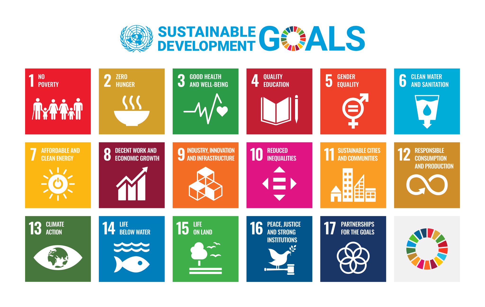
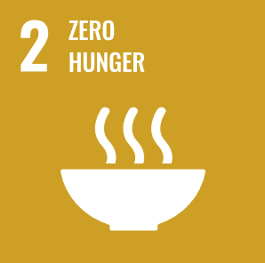
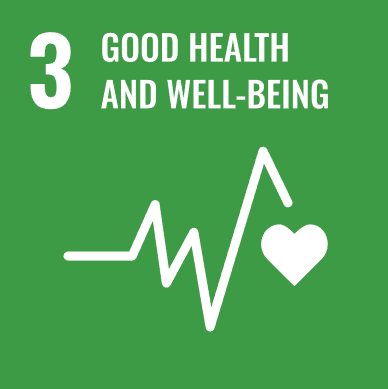
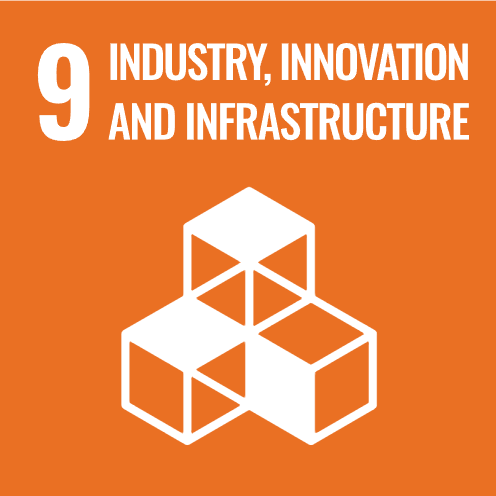
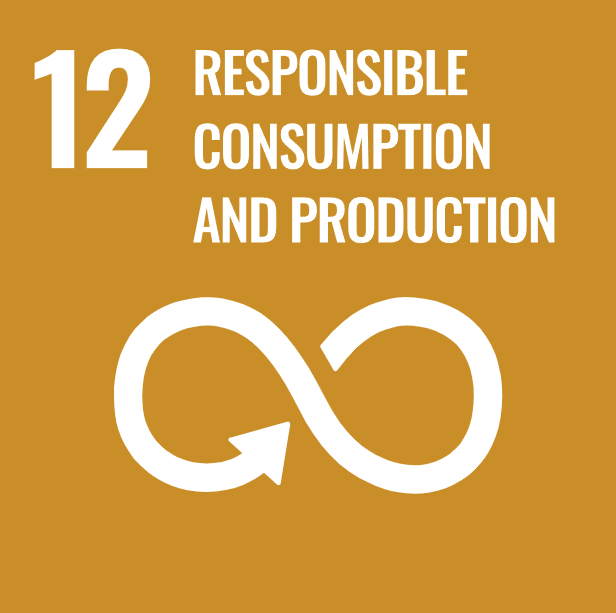

Overview
The risk of Listeria monocytogenes is not limited by borders, income levels, or infrastructure—it exploits the globalized food system itself. Refrigerated supply chains stretch across continents; smoked salmon caught in one ocean is packaged in another country and consumed in a third. When contamination occurs, it triggers product recalls that disrupt markets, waste tons of food, and expose vulnerable populations thousands of miles away to the same pathogen. Tackling this threat is therefore not merely a technical challenge—it is a shared global responsibility that cuts across multiple dimensions of sustainable development.

Our project is rooted in the One Health concept to take on this shared responsibility. It protects human health (SDG 3) by equipping food safety inspectors with a field-deployable detection tool, enabling earlier identification of contaminated products before they reach consumers—thereby reducing the burden of foodborne illness. It preserves food security (SDG 2) by enabling rapid, targeted screening that minimizes unnecessary waste and economic loss along the supply chain. It advances technological innovation (SDG 9) through a novel synthetic biology design that brings lab-grade functionality to non-specialists in normal testing settings. It supports responsible consumption and production (SDG 12) by embedding food safety directly into production workflows, allowing manufacturers to self-monitor quality without relying on external labs. This shifts food safety from a reactive, compliance-driven obligation to a proactive practice of operational accountability. At the same time, strengthen consumer trust in the food system and protect consumers' rights. In doing so, our project embodies the One Health principle that human well-being, food system resilience, and sustainable innovation are inseparable pillars of global health security.
SDG 2 — Zero Hunger

According to the latest UN report, about 673 million people worldwide are still facing hunger in 2024, and by 2026, up to 318 million people are expected to be in severe food insecurity [1]. Against this backdrop, both food safety and food availability are equally important. Current lab-based detection methods take days to produce results, forcing suppliers to hold or destroy entire batches while awaiting clearance—a practice that contributes significantly to post-harvest food waste. Our rapid biosensor allows for real-time, selective screening of contaminated products, minimizing unnecessary discards and reducing economic losses for producers. In doing so, we support a more resilient food supply chain that preserves safe, edible food for consumption while preventing unsafe products from reaching the table.
SDG 3 — Good Health and Well-Being

L. monocytogenes poses a disproportionate threat to pregnant women, the elderly, and immunocompromised individuals, with mortality rates as high as 20–30% in severe cases [2]. Our AND-gate biosensor directly targets this health inequity by providing a rapid, on-site viability test for the pathogen. By shifting detection from centralized laboratories to the point of need—storerooms, back kitchens, and food production lines—we enable earlier intervention, reduce exposure risks for high-risk populations, and contribute to the global target of ending preventable deaths from foodborne illnesses by ensuring food safety.
SDG 9 — Industry, Innovation and Infrastructure

The dual-input "AND-gate" design—requiring both the bacterial toxin LLO and a light-activated signal—represents a novel application of synthetic biology in food safety. Our solution moves beyond traditional lab-bound assays by creating a simple, user-friendly platform that does not require specialized training or equipment. This innovation bridges the gap between cutting-edge biotechnology and everyday food safety surveillance.
The cold chain serves as the fundamental infrastructure for fresh food distribution. But it has a weak point in the testing stage because L. monocytogenes can survive at refrigeration temperatures. Our biosensor transforms this traditional infrastructure into an integrated biosecurity defense framework by giving the cold chain "real-time sensing" capabilities. Contamination is intercepted before it spreads to other items within the same refrigerated environment, ultimately protecting the safety of the entire cold chain. And then protects the food industry as a whole—enabling producers to maintain consumer trust while building a more resilient and responsible food supply system. Besides, our sensor is low-cost, which lowers the testing barrier so that can reduce medical expenses and social losses caused by food contamination. In this way, innovation strengthens infrastructure, and resilient infrastructure sustains both industry and society.
SDG 12 — Responsible Consumption and Production

Traditional pathogen detection methods require expensive laboratory equipment, trained personnel, and 24–48 hours to yield results, which creates a prohibitive barrier to comprehensive quality screening [3]. For many food producers, they rely on periodic batch sampling, effectively gambling on probability. The practical consequence is that when contamination slips through, the result is often a massive, costly product recall.
Our field-deployable solution lowers their "responsibility" threshold. This ensures production quality, cutting down on waste and environmental costs. It helps maintain the sustainability of the entire production process. Ultimately, it protects consumer rights, allowing high-risk groups to safely enjoy fresh food. At the same time, it boosts consumer trust in producers, and this trust improves business income. With stronger economic returns, producers are incentivized to further upgrade their supply chain infrastructure, creating a virtuous cycle in which responsible production drives better outcomes for public health, business resilience, and environmental sustainability alike.
References
- FAO, IFAD, UNICEF, WFP, & WHO. (2025). The State of Food Security and Nutrition in the World 2025 – Addressing high food price inflation for food security and nutrition. Rome, FAO. https://www.who.int/news/item/28-07-2025-global-hunger-declines-but-rises-in-africa-and-western-asia-un-report
- U.S. Food and Drug Administration. (2024, October 31). Get the Facts about Listeria. https://www.fda.gov/animal-veterinary/animal-health-literacy/get-the-facts-about-listeria
- Tassou, C., Gousia, P., & Nychas, G. J. (2023). Molecular targets for foodborne pathogenic bacteria detection. Pathogens, 12(1), 104. https://doi.org/10.3390/pathogens12010104